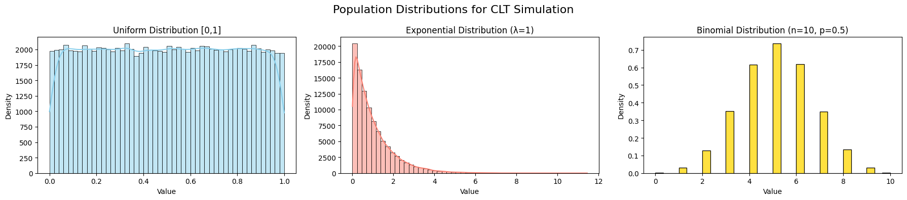
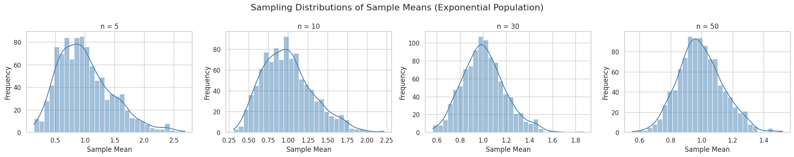
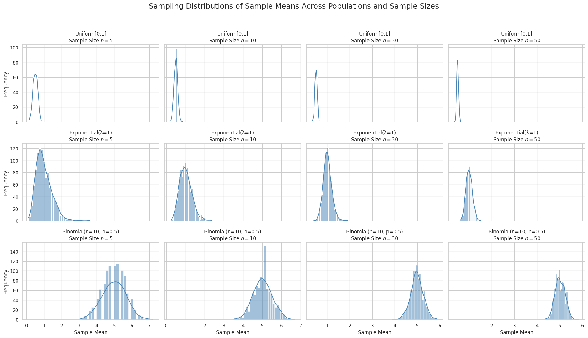
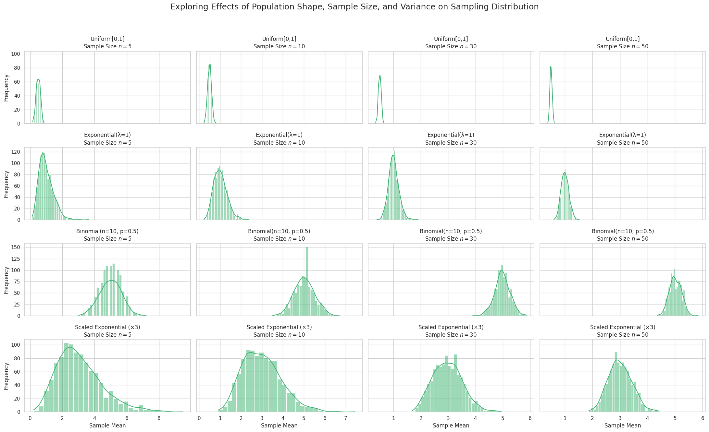

Problem 1
🧪 Step 1: Setting Up Population Distributions
🎯 Objective
To simulate the Central Limit Theorem (CLT), we begin by generating large populations from three distinct probability distributions:
- Uniform Distribution
- Exponential Distribution
- Binomial Distribution
Each population will have \(N = 100{,}000\) data points to approximate a true underlying distribution.
📘 Theoretical Background
Before simulation, let us recall the definitions and properties of the chosen distributions:
1. Uniform Distribution
- Continuous distribution with equal probability across the range \([a, b]\)
- Probability Density Function (PDF):
\(\(f(x) = \frac{1}{b - a}, \quad \text{for } a \leq x \leq b\)\) - Mean:
\(\(\mu = \frac{a + b}{2}\)\) - Variance:
\(\(\sigma^2 = \frac{(b - a)^2}{12}\)\)
2. Exponential Distribution
- Models the time between independent events (e.g., time between arrivals)
- PDF:
\(\(f(x) = \lambda e^{-\lambda x}, \quad \text{for } x \geq 0\)\) - Mean:
\(\(\mu = \frac{1}{\lambda}\)\) - Variance:
\(\(\sigma^2 = \frac{1}{\lambda^2}\)\)
3. Binomial Distribution
- Discrete distribution modeling number of successes in \(n\) independent trials
- Probability Mass Function (PMF):
\(\(P(X = k) = \binom{n}{k} p^k (1-p)^{n-k}\)\) - Mean:
\(\(\mu = np\)\) - Variance:
\(\(\sigma^2 = np(1 - p)\)\)

# 🧪 Step 1: Setting Up Population Distributions
# ✅ Required Libraries
import numpy as np
import matplotlib.pyplot as plt
import seaborn as sns
# Enable inline plotting (optional in Colab, but safe to include)
%matplotlib inline
# ✅ Simulation Parameters
np.random.seed(42) # For reproducibility
N = 100_000 # Number of population data points
# --- Uniform Distribution ---
# Range: [0, 1]
uniform_pop = np.random.uniform(low=0, high=1, size=N)
# --- Exponential Distribution ---
# lambda = 1 → scale = 1
exponential_pop = np.random.exponential(scale=1.0, size=N)
# --- Binomial Distribution ---
# Parameters: n = 10, p = 0.5
binomial_pop = np.random.binomial(n=10, p=0.5, size=N)
# ✅ Plotting the Populations
fig, axs = plt.subplots(1, 3, figsize=(18, 4))
# Plot Uniform
sns.histplot(uniform_pop, bins=50, kde=True, ax=axs[0], color='skyblue')
axs[0].set_title('Uniform Distribution [0,1]')
axs[0].set_xlabel('Value')
axs[0].set_ylabel('Density')
# Plot Exponential
sns.histplot(exponential_pop, bins=50, kde=True, ax=axs[1], color='salmon')
axs[1].set_title('Exponential Distribution (λ=1)')
axs[1].set_xlabel('Value')
axs[1].set_ylabel('Density')
# Plot Binomial
sns.histplot(binomial_pop, bins=30, kde=False, stat="density", ax=axs[2], color='gold')
axs[2].set_title('Binomial Distribution (n=10, p=0.5)')
axs[2].set_xlabel('Value')
axs[2].set_ylabel('Density')
plt.suptitle("Population Distributions for CLT Simulation", fontsize=16)
plt.tight_layout()
plt.show()
🧮 Step 2: Simulating Sampling Distributions
🎯 Objective
To explore the Central Limit Theorem (CLT) by simulating the behavior of sample means drawn from different population distributions.
📘 Central Limit Theorem (CLT)
The Central Limit Theorem states:
Given a population with mean \(\mu\) and variance \(\sigma^2\), the sampling distribution of the sample mean \(\bar{X}\) becomes approximately normal as the sample size \(n\) increases — regardless of the original population's shape.
Mathematically, if \(X_1, X_2, ..., X_n\) are i.i.d. random variables with mean \(\mu\) and variance \(\sigma^2\), then the standardized sample mean:
converges in distribution to the standard normal distribution \(N(0, 1)\) as \(n \to \infty\).
🧪 Simulation Plan
We will:
- Choose a range of sample sizes: \(n = 5, 10, 30, 50\)
- For each \(n\):
- Draw a large number of samples (e.g., 1000)
- Compute the sample mean for each sample
- Collect all sample means to form the sampling distribution
- Plot histograms of these sampling distributions and observe convergence to normality

import numpy as np
import matplotlib.pyplot as plt
import seaborn as sns
# Use seaborn styling
sns.set(style="whitegrid")
# Define population
N = 100_000
np.random.seed(42)
population = np.random.exponential(scale=1.0, size=N)
# Sample sizes to test
sample_sizes = [5, 10, 30, 50]
num_samples = 1000 # Number of samples per size
# Plotting
fig, axs = plt.subplots(1, len(sample_sizes), figsize=(20, 4))
for i, n in enumerate(sample_sizes):
sample_means = []
for _ in range(num_samples):
sample = np.random.choice(population, size=n, replace=False)
sample_means.append(np.mean(sample))
sns.histplot(sample_means, bins=30, kde=True, ax=axs[i], color='steelblue')
axs[i].set_title(f'n = {n}')
axs[i].set_xlabel('Sample Mean')
axs[i].set_ylabel('Frequency')
plt.suptitle('Sampling Distributions of Sample Means (Exponential Population)', fontsize=16)
plt.tight_layout()
plt.show()
📊 Step 3: Visualizing Sampling Distribution Results
🎯 Objective
- Plot histograms of the sample means for each population distribution and for various sample sizes.
- Observe the rate of convergence of these sampling distributions toward a normal distribution.
- Compare how the shape of the original population distribution affects convergence.
🔍 Theoretical Background
Recall the Central Limit Theorem (CLT):
For independent, identically distributed random variables \(X_1, X_2, \ldots, X_n\) with mean \(\mu\) and variance \(\sigma^2\), the standardized sample mean
approaches a standard normal distribution \(N(0,1)\) as sample size \(n \to \infty\).
📌 Key Points to Observe
- Sampling distributions for small \(n\) retain the shape of the population.
- As \(n\) increases, the sampling distributions become more symmetric and bell-shaped.
- The speed of convergence depends on the population distribution's:
- Skewness
- Kurtosis
- Variance

import numpy as np
import matplotlib.pyplot as plt
import seaborn as sns
sns.set(style="whitegrid")
np.random.seed(42)
# Population size
N = 100_000
# Generate populations
populations = {
"Uniform[0,1]": np.random.uniform(0, 1, N),
"Exponential(λ=1)": np.random.exponential(1, N),
"Binomial(n=10, p=0.5)": np.random.binomial(n=10, p=0.5, size=N),
}
sample_sizes = [5, 10, 30, 50]
num_samples = 1000
fig, axes = plt.subplots(len(populations), len(sample_sizes), figsize=(20, 12), sharex='col', sharey='row')
for row_idx, (dist_name, population) in enumerate(populations.items()):
for col_idx, n in enumerate(sample_sizes):
sample_means = []
for _ in range(num_samples):
sample = np.random.choice(population, size=n, replace=False)
sample_means.append(np.mean(sample))
ax = axes[row_idx, col_idx]
sns.histplot(sample_means, bins=30, kde=True, color='steelblue', ax=ax)
ax.set_title(f"{dist_name}\nSample Size $n={n}$")
if col_idx == 0:
ax.set_ylabel('Frequency')
if row_idx == len(populations)-1:
ax.set_xlabel('Sample Mean')
plt.suptitle("Sampling Distributions of Sample Means Across Populations and Sample Sizes", fontsize=18)
plt.tight_layout(rect=[0, 0.03, 1, 0.95])
plt.show()
🔍 Step 4: Exploring Parameters Affecting the Central Limit Theorem
🎯 Objectives
- Analyze how the shape of the original population distribution influences the rate of convergence to normality.
- Investigate the impact of sample size \(n\) on the approximation to a normal distribution.
- Examine the role of population variance \(\sigma^2\) on the spread of the sampling distribution of the mean.
1. Effect of Population Distribution Shape
- The CLT guarantees convergence to normality, but the speed of convergence depends on the shape of the population distribution.
- Distributions with high skewness or heavy tails (e.g., Exponential, Cauchy) require larger sample sizes for the sample mean to approximate normality.
- For symmetric and light-tailed distributions (e.g., Uniform, Binomial), convergence is generally faster.
2. Influence of Sample Size \(n\)
- The sampling distribution of the mean \(\bar{X}\) for sample size \(n\) has:
$$ \text{Mean}(\bar{X}) = \mu $$
$$ \text{Variance}(\bar{X}) = \frac{\sigma^2}{n} $$
-
As \(n\) increases:
-
Variance of \(\bar{X}\) decreases, so the sampling distribution becomes more concentrated around \(\mu\).
- By the CLT, the distribution of \(\bar{X}\) approaches the normal distribution:
$$ \bar{X} \xrightarrow{d} N\left(\mu, \frac{\sigma^2}{n}\right) $$
- Visualizing different \(n\) values helps to observe this concentration and shape change.
3. Impact of Population Variance \(\sigma^2\)
- The spread of the sampling distribution depends on the population variance \(\sigma^2\).
- Higher \(\sigma^2\) leads to more variation in sample means.
- This is why knowing or estimating \(\sigma^2\) is important in inferential statistics.
📊 Summary of Relationships
-
Population shape, sample size, and variance collectively determine how quickly and tightly the sampling distribution of the mean converges to normality.
-
Key equation summarizing the CLT:
$$ Z = \frac{\bar{X} - \mu}{\sigma/\sqrt{n}} \xrightarrow{d} N(0,1) $$
🐍 Next: Python Code to Experiment with These Parameters
-
Simulate sampling distributions with varying:
-
Population shapes (e.g., Uniform, Exponential, Binomial)
- Sample sizes (\(n = 5, 10, 30, 50\))
-
Variances (e.g., by scaling distributions)
-
Visualize the effects to deepen understanding of the CLT in action.

import numpy as np
import matplotlib.pyplot as plt
import seaborn as sns
sns.set(style="whitegrid")
np.random.seed(42)
# Population size for each distribution
N = 100_000
# Define original populations with different shapes and variances
populations = {
"Uniform[0,1]": np.random.uniform(0, 1, N), # Variance = 1/12 ~0.083
"Exponential(λ=1)": np.random.exponential(1, N), # Variance = 1
"Binomial(n=10, p=0.5)": np.random.binomial(n=10, p=0.5, size=N), # Variance = np(1-p) = 2.5
}
# Scale exponential to higher variance for demonstration
populations["Scaled Exponential (×3)"] = populations["Exponential(λ=1)"] * 3 # Variance ~9
sample_sizes = [5, 10, 30, 50]
num_samples = 1000 # Number of samples per sample size
fig, axes = plt.subplots(len(populations), len(sample_sizes), figsize=(22, 14), sharex='col', sharey='row')
for row_idx, (dist_name, population) in enumerate(populations.items()):
for col_idx, n in enumerate(sample_sizes):
sample_means = []
for _ in range(num_samples):
sample = np.random.choice(population, size=n, replace=False)
sample_means.append(np.mean(sample))
ax = axes[row_idx, col_idx]
sns.histplot(sample_means, bins=30, kde=True, color='mediumseagreen', ax=ax)
ax.set_title(f"{dist_name}\nSample Size $n={n}$")
if col_idx == 0:
ax.set_ylabel('Frequency')
if row_idx == len(populations) - 1:
ax.set_xlabel('Sample Mean')
plt.suptitle("Exploring Effects of Population Shape, Sample Size, and Variance on Sampling Distribution", fontsize=18)
plt.tight_layout(rect=[0, 0.03, 1, 0.95])
plt.show()